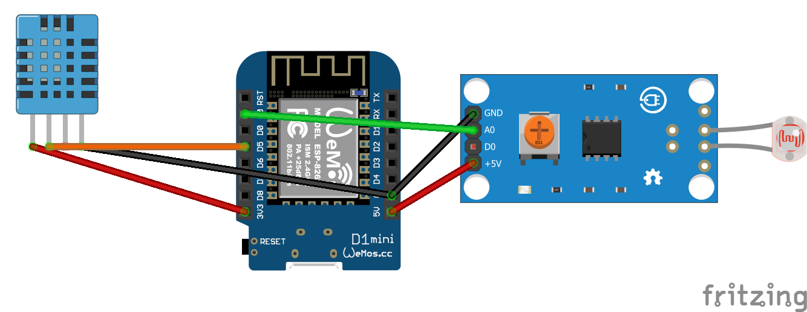

Een slim huis wordt pas echt slim wanneer het niet alleen reageert op een tijdstip of knopdruk, maar ook op wat er op dat moment in een ruimte gebeurt. Juist daarom is een combinatie van licht, temperatuur en luchtvochtigheid zo interessant.
In plaats van drie losse sensoren naast elkaar te gebruiken, bouw je hier één compacte Homeyduino-opstelling die meerdere metingen tegelijk doet. De vernieuwde code werkt bovendien een stuk netter dan een simpele basisopzet: wifi wordt bewaakt, de LDR-waarde wordt gefilterd en Homey krijgt alleen updates wanneer dat echt nodig is.
Wat ga je bouwen?
Je bouwt een compacte licht- en klimaatsensor met een DHT11 en een analoge LDR op een ESP8266-board. De sensor publiceert temperatuur, luchtvochtigheid en lichtsterkte als losse capabilities naar Homey.
- Lichtmeting via LDR → de analoge waarde wordt gefilterd voor een rustiger en bruikbaarder signaal.
- Klimaatmeting via DHT11 → temperatuur en luchtvochtigheid worden periodiek uitgelezen en alleen gepubliceerd wanneer dat zinvol is.
Het resultaat is een praktisch DIY-project dat niet alleen leuk is om te bouwen, maar ook direct bruikbaar wordt in Homey Inzichten en in je flows.
Benodigdheden
- Microcontroller met wifi, bijvoorbeeld een ESP8266 NodeMCU of Wemos D1 Mini
- LDR of LDR-module op de analoge ingang
- DHT11 temperatuur- en luchtvochtigheidssensor
- Breadboard of dupontkabels voor de aansluiting
- Micro USB voeding of USB-kabel voor het board
- Homey met de Homeyduino app
- Arduino IDE en de benodigde libraries
Handige links bij dit project
Dit zijn producten die aansluiten op de benodigdheden in dit artikel.
Stap-voor-stap uitleg
1. Sluit de sensoren aan op je board
In deze opzet gebruik je zowel een DHT11 als een analoge LDR. De pinverdeling uit de code is als volgt:
- DHT11 data → D5
- LDR analoog → A0
Zorg daarnaast uiteraard voor de juiste voedingsaansluitingen en een gedeelde GND. Juist omdat de opzet eenvoudig is, is dit een mooi project om mee te beginnen.

2. Bereid Arduino IDE voor
Zorg dat je ESP8266-board correct is ingesteld in Arduino IDE en installeer de libraries ESP8266WiFi, Homey en SimpleDHT. Vul daarna bovenin de sketch je eigen wifi-naam en wachtwoord in.
3. Upload de Homeyduino code
Onderstaande code leest de DHT11 en LDR op verschillende intervallen uit, bewaakt de wifi-verbinding en publiceert alleen wijzigingen of heartbeat-updates naar Homey. Daardoor blijft de sensor ook in dagelijks gebruik een stuk netter werken.
#include <ESP8266WiFi.h>
#include <Homey.h>
#include <SimpleDHT.h>
// =========================
// Debug instellingen
// =========================
#define DEBUG 0 // 1 = debug aan, 0 = debug uit
#if DEBUG
#define DBG_PRINT(x) Serial.print(x)
#define DBG_PRINTLN(x) Serial.println(x)
#else
#define DBG_PRINT(x)
#define DBG_PRINTLN(x)
#endif
// =========================
// Configuratie
// =========================
namespace Config {
constexpr const char* WIFI_SSID = "SSID";
constexpr const char* WIFI_PASSWORD = "PASSWORD";
// Pins
constexpr uint8_t DHT_PIN = D5;
constexpr uint8_t LDR_ANALOG_PIN = A0;
// WiFi
constexpr unsigned long WIFI_CHECK_INTERVAL_MS = 60000;
constexpr unsigned long WIFI_CONNECT_TIMEOUT_MS = 30000;
// DHT11
constexpr unsigned long DHT_SAMPLE_INTERVAL_MS = 30000;
constexpr unsigned long DHT_HEARTBEAT_INTERVAL_MS = 300000;
// Analoge LDR
constexpr unsigned long LDR_SAMPLE_INTERVAL_MS = 1000;
constexpr unsigned long LDR_HEARTBEAT_INTERVAL_MS = 60000;
constexpr int LDR_PUBLISH_THRESHOLD = 10;
constexpr float LDR_EMA_ALPHA = 0.15f;
// Homey
constexpr const char* HOMEY_DEVICE_NAME = "Multisensor";
constexpr const char* HOMEY_DEVICE_CLASS = "sensor";
constexpr const char* CAPABILITY_TEMPERATURE = "measure_temperature";
constexpr const char* CAPABILITY_HUMIDITY = "measure_humidity";
constexpr const char* CAPABILITY_LUMINANCE = "measure_luminance";
}
// =========================
// Centrale helpers
// =========================
bool canPublishToHomey() {
return WiFi.status() == WL_CONNECTED;
}
// =========================
// WiFi-module
// =========================
namespace WifiModule {
struct State {
unsigned long lastCheckAt = 0;
bool wasConnected = false;
bool reconnectedEvent = false;
};
State state;
void connectWithTimeout() {
WiFi.mode(WIFI_STA);
WiFi.begin(Config::WIFI_SSID, Config::WIFI_PASSWORD);
Serial.print(F("Verbinden met WiFi..."));
const unsigned long startAttemptTime = millis();
while (WiFi.status() != WL_CONNECTED &&
millis() - startAttemptTime < Config::WIFI_CONNECT_TIMEOUT_MS) {
delay(500);
Serial.print(F("."));
}
Serial.println();
if (WiFi.status() == WL_CONNECTED) {
Serial.print(F("[SUCCES] Verbonden! IP-adres: "));
Serial.println(WiFi.localIP());
state.wasConnected = true;
} else {
Serial.println(F("[WIFI] Timeout bereikt. Sensor start zonder wifi."));
state.wasConnected = false;
}
}
void maintain(unsigned long currentMillis) {
if (currentMillis - state.lastCheckAt < Config::WIFI_CHECK_INTERVAL_MS) {
return;
}
state.lastCheckAt = currentMillis;
state.reconnectedEvent = false;
DBG_PRINT(F("[DEBUG] WiFi status: "));
DBG_PRINT(WiFi.status());
DBG_PRINT(F(" | IP: "));
DBG_PRINTLN(WiFi.localIP());
const wl_status_t wifiStatus = WiFi.status();
if (wifiStatus == WL_CONNECTED) {
if (!state.wasConnected) {
Serial.print(F("[WIFI] Opnieuw verbonden! IP-adres: "));
Serial.println(WiFi.localIP());
state.wasConnected = true;
state.reconnectedEvent = true;
}
return;
}
if (state.wasConnected) {
Serial.println(F("[WIFI] Verbinding kwijt. Herstellen..."));
state.wasConnected = false;
} else {
Serial.println(F("[WIFI] Nog niet verbonden. Nieuwe poging..."));
}
WiFi.begin(Config::WIFI_SSID, Config::WIFI_PASSWORD);
}
bool justReconnected() {
return state.reconnectedEvent;
}
}
// =========================
// Klimaatmodule (DHT11)
// =========================
namespace ClimateModule {
struct Reading {
int temperature = 0;
int humidity = 0;
};
struct State {
unsigned long lastSampleAt = 0;
unsigned long lastPublishAt = 0;
Reading currentReading;
Reading lastPublishedReading;
bool hasReading = false;
bool hasPublished = false;
bool dirty = false;
};
State state;
SimpleDHT11 sensor;
void begin() {
state.lastSampleAt = millis() - Config::DHT_SAMPLE_INTERVAL_MS;
}
bool read(Reading& reading) {
byte temperature = 0;
byte humidity = 0;
const int err = sensor.read(Config::DHT_PIN, &temperature, &humidity, NULL);
if (err != SimpleDHTErrSuccess) {
Serial.print(F("[FOUT] DHT11 uitlezen mislukt, err="));
Serial.println(err);
return false;
}
reading.temperature = static_cast<int>(temperature);
reading.humidity = static_cast<int>(humidity);
return true;
}
bool isValid(const Reading& reading) {
const bool validTemperature = (reading.temperature >= 0 && reading.temperature <= 50);
const bool validHumidity = (reading.humidity >= 0 && reading.humidity <= 100);
return validTemperature && validHumidity;
}
void logReading(const Reading& reading) {
DBG_PRINT(F("Klimaat: "));
DBG_PRINT(reading.temperature);
DBG_PRINT(F(" C | "));
DBG_PRINT(reading.humidity);
DBG_PRINTLN(F(" % vochtigheid"));
}
bool shouldPublish(const Reading& reading, unsigned long currentMillis) {
if (!state.hasPublished) {
return true;
}
const bool temperatureChanged =
reading.temperature != state.lastPublishedReading.temperature;
const bool humidityChanged =
reading.humidity != state.lastPublishedReading.humidity;
const bool heartbeatMet =
(currentMillis - state.lastPublishAt) >= Config::DHT_HEARTBEAT_INTERVAL_MS;
return temperatureChanged || humidityChanged || heartbeatMet;
}
void markLatestState(const Reading& reading) {
state.currentReading = reading;
state.hasReading = true;
if (!state.hasPublished) {
state.dirty = true;
return;
}
const bool temperatureChanged =
reading.temperature != state.lastPublishedReading.temperature;
const bool humidityChanged =
reading.humidity != state.lastPublishedReading.humidity;
state.dirty = temperatureChanged || humidityChanged;
}
void publishLatest(unsigned long currentMillis) {
if (!state.hasReading) {
return;
}
if (!canPublishToHomey()) {
state.dirty = true;
Serial.println(F("[WAARSCHUWING] Klimaatstatus lokaal bijgewerkt, nog niet naar Homey gestuurd."));
return;
}
Homey.setCapabilityValue(Config::CAPABILITY_TEMPERATURE, static_cast<float>(state.currentReading.temperature));
Homey.setCapabilityValue(Config::CAPABILITY_HUMIDITY, static_cast<float>(state.currentReading.humidity));
state.lastPublishedReading = state.currentReading;
state.lastPublishAt = currentMillis;
state.hasPublished = true;
state.dirty = false;
Serial.println(F("[HOMEY] Klimaatgegevens succesvol bijgewerkt."));
}
void syncIfDirty(unsigned long currentMillis) {
if (!state.dirty || !state.hasReading) {
return;
}
Serial.println(F("[HOMEY] Laatste klimaatstatus synchroniseren..."));
publishLatest(currentMillis);
}
void process(unsigned long currentMillis) {
if (currentMillis - state.lastSampleAt < Config::DHT_SAMPLE_INTERVAL_MS) {
return;
}
state.lastSampleAt = currentMillis;
Reading reading;
if (!read(reading)) {
return;
}
if (!isValid(reading)) {
Serial.println(F("[FOUT] Ongeldige klimaatwaarde ontvangen."));
return;
}
logReading(reading);
markLatestState(reading);
if (shouldPublish(reading, currentMillis)) {
publishLatest(currentMillis);
}
}
}
// =========================
// Luminance-module (analoge LDR via A0)
// =========================
namespace LuminanceModule {
struct State {
int rawValue = 0;
float filteredValue = 0.0f;
bool hasReading = false;
int currentLuminance = 0;
int lastPublishedLuminance = 0;
bool hasPublished = false;
bool dirty = false;
unsigned long lastSampleAt = 0;
unsigned long lastPublishAt = 0;
};
State state;
void begin() {
state.lastSampleAt = millis() - Config::LDR_SAMPLE_INTERVAL_MS;
}
int readRawLuminance() {
return analogRead(Config::LDR_ANALOG_PIN);
}
void updateFilteredLuminance(int rawValue) {
state.rawValue = rawValue;
if (!state.hasReading) {
state.filteredValue = static_cast<float>(rawValue);
state.hasReading = true;
return;
}
state.filteredValue =
(Config::LDR_EMA_ALPHA * rawValue) +
((1.0f - Config::LDR_EMA_ALPHA) * state.filteredValue);
}
void markLatestState() {
state.currentLuminance = static_cast<int>(state.filteredValue);
if (!state.hasPublished) {
state.dirty = true;
return;
}
state.dirty =
abs(state.currentLuminance - state.lastPublishedLuminance) >=
Config::LDR_PUBLISH_THRESHOLD;
}
void logReading() {
DBG_PRINT(F("[DEBUG] LDR raw="));
DBG_PRINT(state.rawValue);
DBG_PRINT(F(" | filtered="));
DBG_PRINTLN(state.currentLuminance);
}
bool shouldPublish(unsigned long currentMillis) {
if (!state.hasReading) {
return false;
}
const bool heartbeatMet =
(currentMillis - state.lastPublishAt) >= Config::LDR_HEARTBEAT_INTERVAL_MS;
return state.dirty || heartbeatMet;
}
void publishLatest(unsigned long currentMillis) {
if (!state.hasReading) {
return;
}
if (!canPublishToHomey()) {
state.dirty = true;
Serial.println(F("[WAARSCHUWING] Luminance lokaal bijgewerkt, nog niet naar Homey gestuurd."));
return;
}
Homey.setCapabilityValue(
Config::CAPABILITY_LUMINANCE,
static_cast<float>(state.currentLuminance));
state.lastPublishedLuminance = state.currentLuminance;
state.lastPublishAt = currentMillis;
state.hasPublished = true;
state.dirty = false;
Serial.println(F("[HOMEY] Luminance succesvol bijgewerkt."));
}
void syncIfDirty(unsigned long currentMillis) {
if (!state.dirty || !state.hasReading) {
return;
}
Serial.println(F("[HOMEY] Laatste luminance synchroniseren..."));
publishLatest(currentMillis);
}
void process(unsigned long currentMillis) {
if (currentMillis - state.lastSampleAt < Config::LDR_SAMPLE_INTERVAL_MS) {
return;
}
state.lastSampleAt = currentMillis;
const int rawValue = readRawLuminance();
updateFilteredLuminance(rawValue);
markLatestState();
logReading();
if (shouldPublish(currentMillis)) {
publishLatest(currentMillis);
}
}
}
// =========================
// Homey initialisatie
// =========================
void initializeHomey() {
Homey.begin(Config::HOMEY_DEVICE_NAME);
Homey.setClass(Config::HOMEY_DEVICE_CLASS);
Homey.addCapability(Config::CAPABILITY_TEMPERATURE);
Homey.addCapability(Config::CAPABILITY_HUMIDITY);
Homey.addCapability(Config::CAPABILITY_LUMINANCE);
}
// =========================
// Setup
// =========================
void setup() {
Serial.begin(115200);
Serial.println();
Serial.println(F("--- Multisensor: DHT11 + LDR Luminance ---"));
ClimateModule::begin();
LuminanceModule::begin();
WifiModule::connectWithTimeout();
initializeHomey();
}
// =========================
// Main loop
// =========================
void loop() {
Homey.loop();
yield();
const unsigned long currentMillis = millis();
WifiModule::maintain(currentMillis);
if (WifiModule::justReconnected()) {
ClimateModule::syncIfDirty(currentMillis);
LuminanceModule::syncIfDirty(currentMillis);
}
ClimateModule::process(currentMillis);
LuminanceModule::process(currentMillis);
}4. Test de sensor via de seriële monitor
Open de Seriële Monitor in Arduino IDE en zet deze op 115200 baud. Zo kun je controleren of de wifi goed verbindt en of de sensorwaarden netjes binnenkomen. Zet DEBUG op 1 wanneer je extra informatie wilt zien over de wifi-status of de gefilterde LDR-waarde.
5. Voeg de sensor toe aan Homey en gebruik hem in flows
Na het uploaden koppel je de sensor via Homeyduino aan Homey. Vervolgens verschijnen temperatuur, luchtvochtigheid en lichtsterkte als losse meetwaarden in Homey. Daarmee kun je direct aan de slag met inzichten, meldingen en slimme automatiseringen.

Integratie met Homey
De kracht van dit project zit niet alleen in de hardware, maar vooral in de manier waarop de data wordt doorgegeven. De code gebruikt aparte modules voor wifi, klimaat en luminance, waardoor alles overzichtelijk blijft en gemiste updates opnieuw kunnen worden gesynchroniseerd zodra de wifi terugkomt.
Daardoor kun je bijvoorbeeld:
- Verlichting alleen inschakelen wanneer het echt donker genoeg is
- Een melding sturen wanneer een kamer te warm of te vochtig wordt
- Licht en klimaat combineren met aanwezigheid of tijdschema’s voor slimmere comfortflows

Praktisch gebruik
In de praktijk is dit zo’n project waar je verrassend veel aan hebt. In een woonkamer, slaapkamer, zolder of thuiskantoor geeft de sensor Homey extra context om betere keuzes te maken. Lichtsterkte helpt voorkomen dat lampen overdag onnodig inschakelen, terwijl temperatuur en luchtvochtigheid je een beter beeld geven van comfort en ventilatie.

Aandachtspunten
- De DHT11 is prima voor een betaalbaar DIY-project, maar verwacht geen laboratoriumnauwkeurigheid.
- De LDR gebruikt hier een analoge meting via A0 en wordt softwarematig gefilterd. Dat werkt rustiger dan een kale ruwe uitlezing, maar blijft afhankelijk van je opstelling en lichtinval.
- Pas vóór het uploaden altijd je wifi-gegevens en bij voorkeur ook de apparaatnaam bovenin de code aan.
Conclusie
Met deze vernieuwde opzet bouw je niet alleen een simpele lichtsensor, maar een veel interessantere licht- en klimaatsensor die Homey echte context geeft. De combinatie van temperatuur, luchtvochtigheid en gefilterde lichtmeting maakt dit project direct bruikbaar in dagelijkse flows, terwijl de modulaire code zorgt voor een nettere en stabielere basis. Zoek je een betaalbaar DIY-project waar je in de praktijk echt iets aan hebt, dan is dit een hele mooie stap.